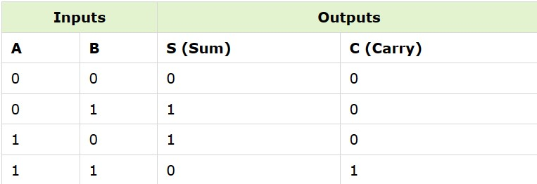
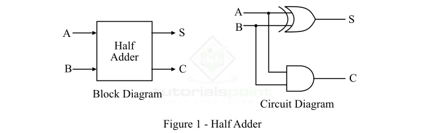
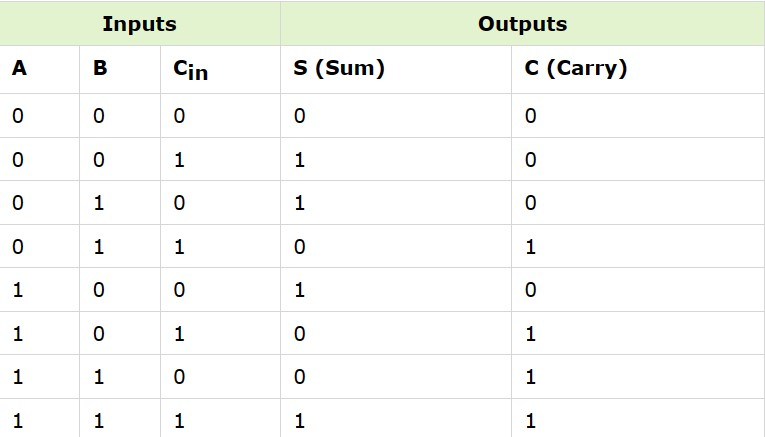
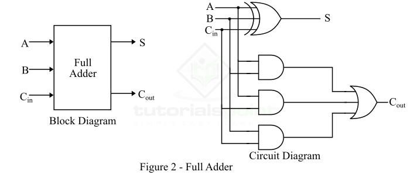

Adders
We have different types of digital devices like computers, calculators that can perform a variety of processing functions like addition, subtraction, multiplication, division, etc. The most basic arithmetic operation that the ALU (arithmetic logic unit) of a computer performs is the addition of two or more binary numbers. To perform the operation of addition, a combinational logic circuit, named Adder is used.
Adders are classified into two types namely:
Half Adder:
A combinational logic circuit which is designed to add two binary digits is called as a half adder. The half adder provides the output along with a carry value (if any). The half adder circuit is designed by connecting an EX-OR gate and one AND gate. It has two input terminals and two output terminals for sum and carry.A combinational logic circuit which is designed to add two binary digits is called as a half adder. The half adder provides the output along with a carry value (if any). The half adder circuit is designed by connecting an EX-OR gate and one AND gate. It has two input terminals and two output terminals for sum and carry.
Truth Table:
Logic Diagram:
Full Adder:
A combinational logic circuit that can add two binary digits (bits) and a carry bit, and produces a sum bit and a carry bit as output is known as a full-adder. In other words, a combinational circuit which is designed to add three binary digits and produces two outputs (sum and carry) is known as a full adder. Thus, a full adder circuit adds three binary digits, where two are the inputs and one is the carry forwarded from the previous addition.
Truth Table:
Logic Diagram:
